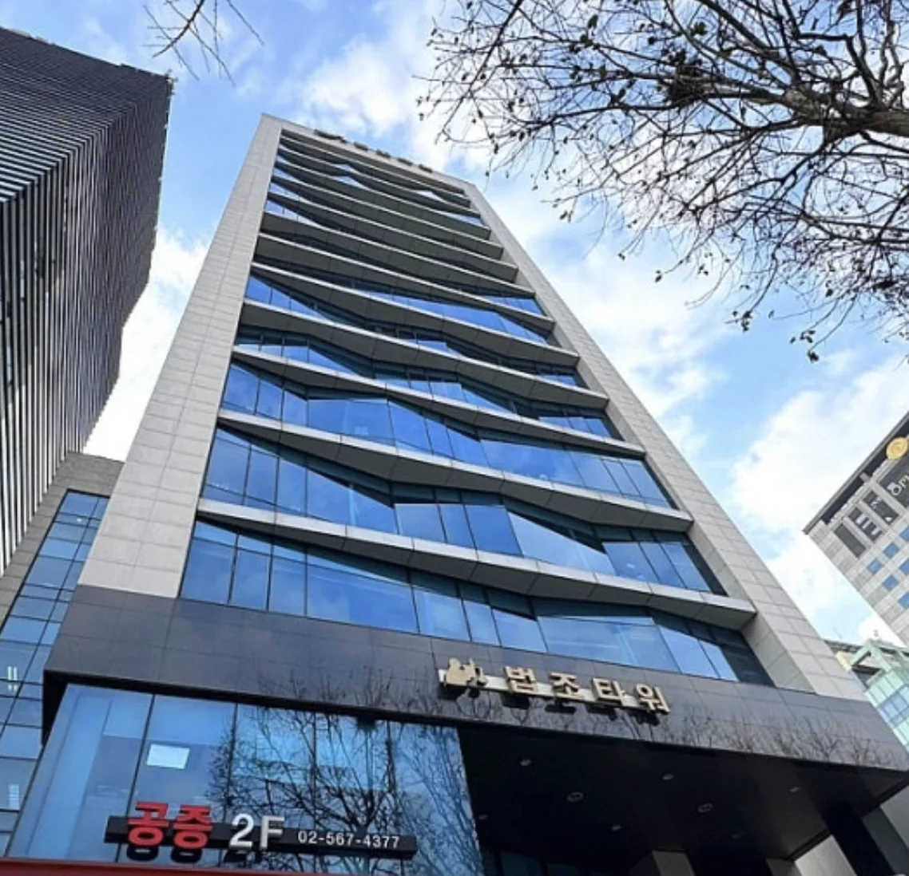

GREETING
의뢰인의 마음을
어루만지며 함께
극복해 나가겠습니다.
안녕하세요. 법무법인 유일 대표 정호길 변호사입니다.
사법연수원을 수료하고 법조인의 길을 걸어온 지 어느덧 25년이 되었습니다. 돌이켜 보면 수많은 의뢰인들과 함께 웃고 울던 날들이 주마등같이 지나가네요.
지금까지 저의 변호사 경력을 십분 살려 의뢰인과 함께하는 전문 변호사로서 무거운 마음으로 소임을 다해 보고자 합니다. 의뢰인의 마음을 어루만지며 어려움을 함께 극복해 나가겠습니다.
또한 고의사고가 아니라면 최대한의 양형인자를 적용하여 법이 허용하는 최선의 선처를 위해 최선을 다하겠습니다.
저의 25년 법조인 경험을 바탕으로 열정을 담아 의뢰인을 변호하여 빠른 일상으로의 회복에 도움드릴 것을 약속드리겠습니다. 의뢰 과정보다 의뢰 후 과정 그리고 결과가 더 좋은 법무법인 유일의 대표 변호사가 되겠습니다.
감사합니다.
법무법인 유일 대표변호사 정호길
누군가에게는 그저 지나가는 밤이지만,
어떤 분에게는 가장 긴 밤입니다.
FREQUENT QUESTIONS
지금 가장 궁금하신 것부터
말씀드리겠습니다.
상담에서 실제로 가장 많이 받는 질문을 모았습니다. 궁금하신 항목을 누르시면 펼쳐집니다.
위 내용은 일반적인 절차 안내이며 개별 사건에 대한 법률 자문이 아닙니다. 같은 죄명이라도 사실관계와 증거에 따라 절차와 결과가 달라집니다. 해당하는 상황이 있으시면 상담을 통해 확인해 주세요.
PRACTICE AREAS
전담 분야
한 사건이 한 분야에서만 끝나는 경우는 드뭅니다. 이혼에 부동산이, 폐업에 형사가 함께 걸립니다. 분야는 나누어 맡되, 사건은 변호인단이 함께 봅니다.
듣기 좋은 말씀만 드리지 않습니다.
불리한 것부터 말씀드립니다.
OUR LAWYERS
변호인단
사건을 맡은 변호사가 처음부터 끝까지 책임지되, 혼자 판단하지 않습니다. 쟁점이 여러 분야에 걸리면 담당 변호사들이 함께 기록을 보고 방향을 정합니다. 유리한 말씀을 앞세우기보다, 되는 일과 어려운 일을 있는 그대로 말씀드립니다.
OUR PRINCIPLE
규모가 아니라
사건에 쓰는 시간으로
증명합니다.
-
01
한 명의 의뢰인에게 변호인단 전체의 전략
사건은 한 사람이 해결하지 않습니다. 형사 · 민사 · 가사 · 회생 각 분야 변호사가 하나의 사건을 교차 검토합니다.
-
02
감정이 아니라 기록에서 출발
억울함은 그 자체로 증거가 되지 않습니다. 수사기록과 진술의 모순을 먼저 찾고, 그다음에 주장을 세웁니다.
-
03
대표변호사가 직접 총괄
상담한 변호사와 법정에 서는 변호사가 다르지 않습니다. 사건의 처음부터 끝까지 같은 사람이 책임집니다.
VISIT & CONSULT
오시는 길
- 주소
- 서울특별시 서초구 서초대로 264, 2층
(서초동, 법조타워) - 상담
- 010-8227-8485 카카오톡 상담도 가능합니다
- 대표전화
- 02-567-4377
- 공증
- 02-567-4377 팩스 02-563-8181
- 팩스
- 02-583-5222
- 상담시간
- 평일 09:00 – 18:00 주말·야간 상담은 사전 예약
방문 상담은 사전 예약을 권해 드립니다. 주차 안내가 필요하시면 방문 전 전화로 문의해 주세요.
상담 신청
남겨주시면 확인 후 연락드리겠습니다.